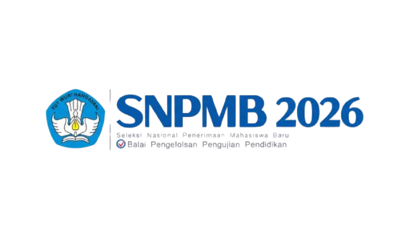
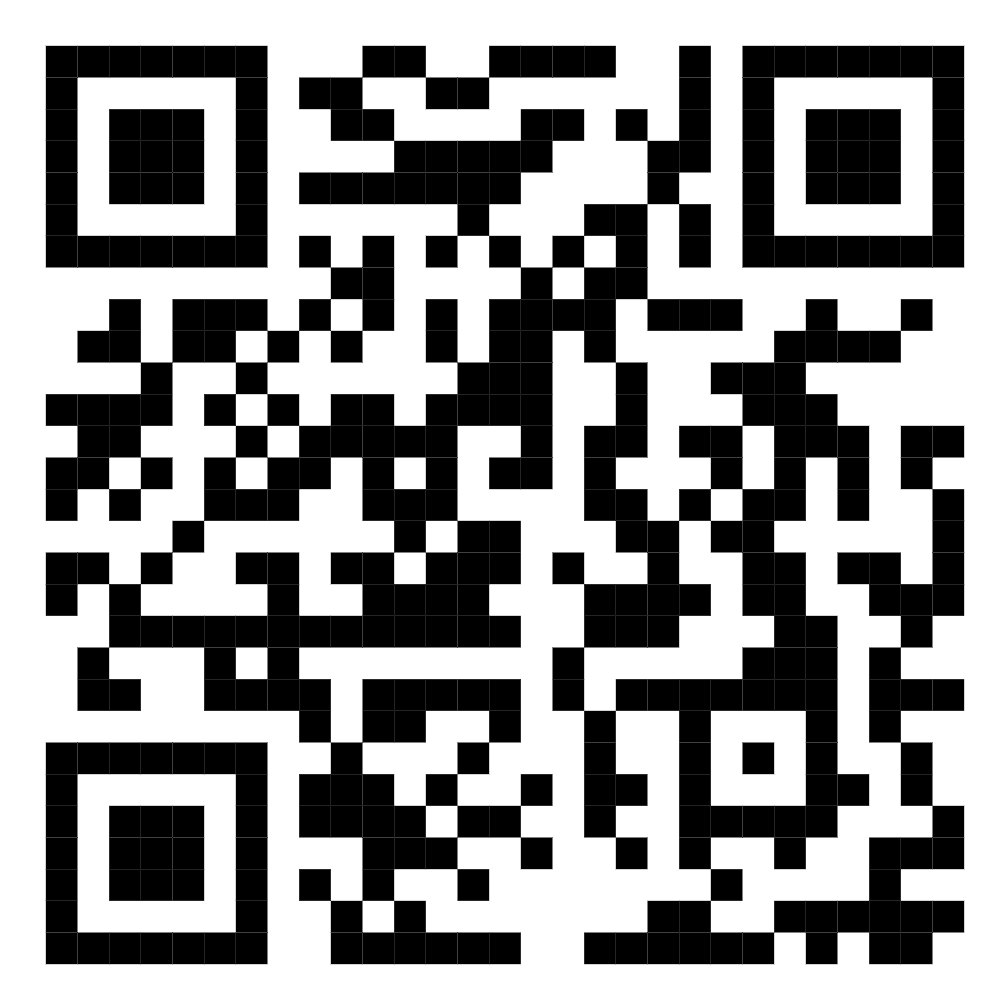

| Nomor Peserta | : XXXXXXXXXXXX |
| Nama | : NAMA CONTOH |
| Tanggal Lahir | : 00-00-0000 |
Selamat! Anda dinyatakan lulus seleksi SNBT SNPMB 2026.
| PTN | : 332 - INSTITUT TEKNOLOGI BANDUNG |
| Program Studi | : 332115 - Fakultas Teknik Pertambangan dan Perminyakan (FTTM) (Sarjana) |
Persyaratan pendaftaran ulang calon mahasiswa baru dapat dilihat di sini
Anda dapat mengunduh kembali Kartu Tanda Peserta UTBK-SNBT 2026 di sini